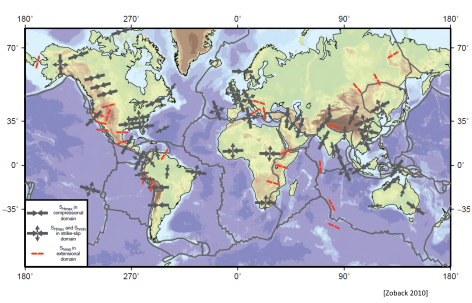
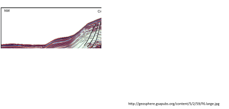

Next: 1.2 Geomechanics in the Up: 1. Introduction Previous: 1. Introduction Contents
Structural Geology is the branch of geology that studies the three-dimensional deformation of geological formations as they deposit, metamorphose, fold, and fracture. The Earth's crust has changed considerably over geological time going through periods of burial, uplifting, contraction and extension (see animated Earth evolution here https://dinosaurpictures.org/ancient-earth#0).
Detailed description and models of the subsurface require in-depth structural geology characterization. Past knowledge of a given formation is essential to predict how it will evolve in the future under imposed engineering changes.
The Earth is composed of minerals (mostly plagioclase, feldspar, quartz, pyroxene, mica and clay minerals) that solidify on the surface and form a brittle crust underlain by magma. Magma currents underneath the lithosphere are not balanced and force the lithosphere to collide into each other and crack.
Faulting and folding are the result of these tectonic displacements that originate from the movement of tectonic plates. For example, convergent plate boundaries cause lateral compression and structures that result in tall mountain ranges (e.g., Himalayas). Divergent plate boundaries cause lateral extension (e.g., Mid-Atlantic ridge that forms Island). Tectonic plates moving parallel with respect to each other in opposite direction form transform boundaries and create a shear damage region around the plane of discontinuity (e.g., San Andreas Fault in North America).
Tectonic plate movement changes the stresses in the lithosphere (Figure 1.2). For example, a region near convergent tectonic plates is expected to have higher lateral compressive stresses than a region near a divergent plate boundary. The determination of local stresses are critically important to Energy Geomechanics because they affect wellbore stability, fault reactivation, and propagation of hydraulic fractures.
Gravity results in sedimentary layers that are mostly horizontal and parallel to each other at the time of deposition. Tectonic movements result in changes of lateral stresses (tectonic stresses) that deform sedimentary layers (Figure 1.3 and 1.4). Ductile rock deformation leads to folding, e.g., anticline, with a a gradual change in deformation without an apparent discontinuity. Brittle deformation leads to fractures and faulting, i.e., a clear discontinuity in sedimentary layers. Hydrocarbon accumulations take advantage of folds and low permeability faults. The deformational behavior of rocks is crucial in defining the variation of rock permeability with changes of stresses.
 |
 |